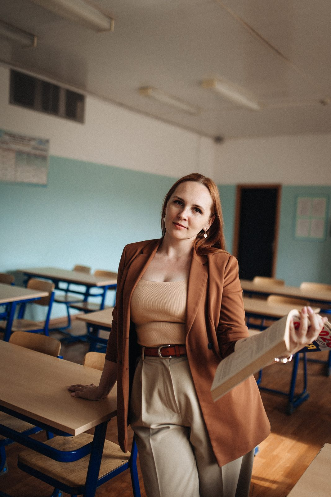
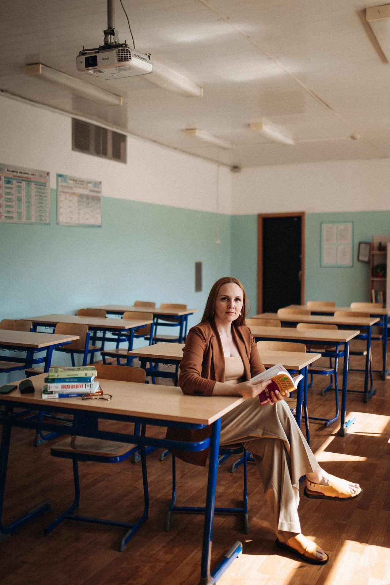
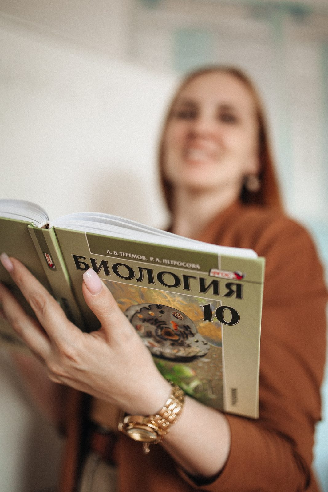
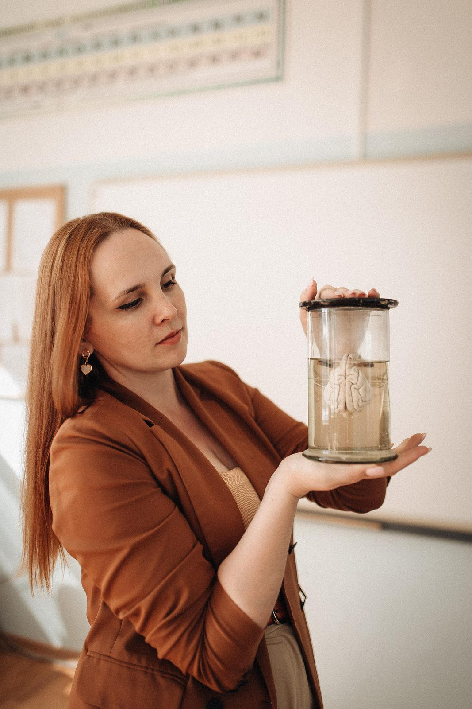
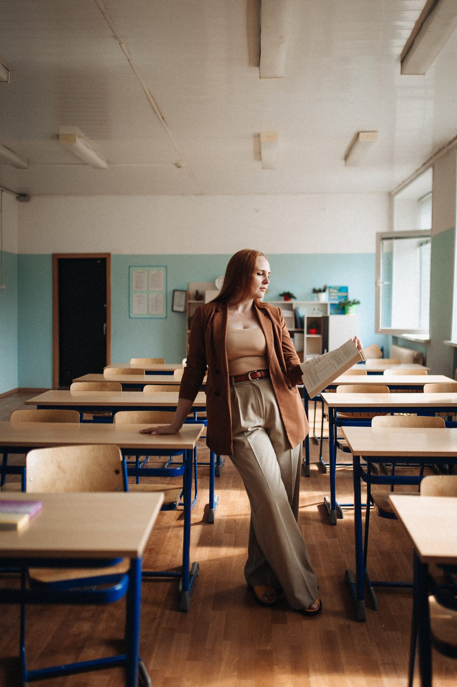
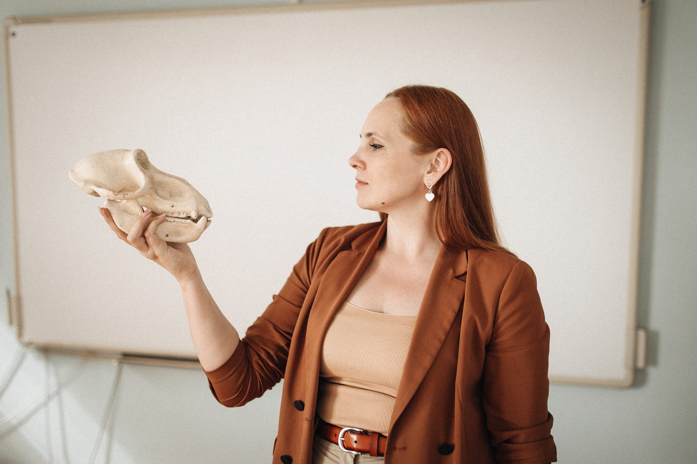
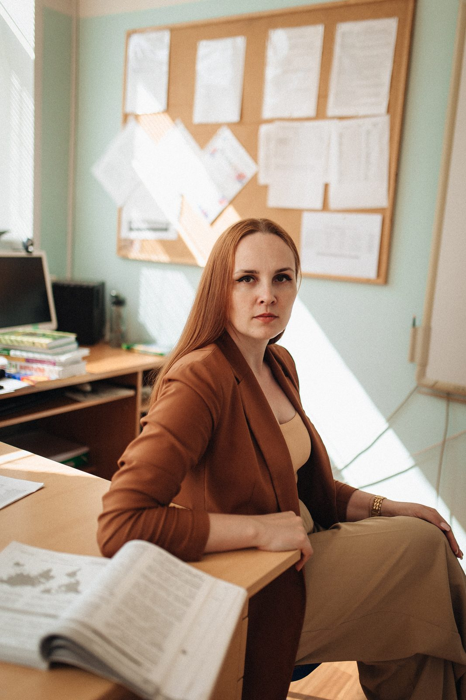

Найду пробел в знаниях раньше, чем он станет оценкой
Я репетитор по биологии и химии: занимаюсь индивидуально и онлайн со школьниками 5–11 классов, готовлю к ОГЭ и ЕГЭ. Вам не нужно искать программу и проверять каждый урок: я подберу стратегию под ученика и буду рассказывать, как идёт прогресс.
Тема не понята, оценка падает, а до экзамена всё ближе. Пробел проще закрыть сейчас, пока он один и пока на него не легли следующие темы.

О преподавателе
Меня зовут Лилия Владимировна Васильченко. Я репетитор по биологии и химии: занимаюсь со школьниками 5–11 классов, готовлю к ОГЭ и ЕГЭ. Занятия провожу индивидуально, онлайн.
- Образование
- Адыгейский государственный университет, Майкоп. Бакалавр, направление 44.03.05 «Педагогическое образование», специальность «Биология, география», диплом 2014 года.
- Стаж
- 10 лет преподавательской практики. Преподавала биологию в техникуме, проводила открытые занятия и выступала на региональном семинаре и методическом совете.
- Специализация
- Биология и химия для школьников 5–11 классов, подготовка к ОГЭ и ЕГЭ. По биологии в 2022 году прошла подготовку экспертов для работы в региональной предметной комиссии (ФИПИ, 72 часа).
- Достижения
-
- Победитель (1 место) Всероссийской олимпиады для педагогов «ФГОС Проверка», 2018
- Статья «Система оценки учебных достижений обучающихся» в журнале «Трибуна учёного», 06/2022
- Повышение квалификации: функциональная грамотность школьника (2022), «Высшая школа учеников Амонашвили» (2024 и 2025)
- Принципы
-
- Сначала общая картина темы, затем детали: так понимание держится дольше заучивания (методика Шаталова)
- Уважение к ребёнку: спокойный тон, без давления (принципы гуманной педагогики)
- Программа строится от исходного уровня ученика, а не от учебника подряд
- Родители видят, как идёт подготовка
Дипломы и сертификаты
Часть документов, нажмите на любой, чтобы открыть крупно.




Как я нахожу и закрываю пробелы
листайте, карта заполняется
- Смотрю, что ученик знает на самом делеПрохожу по темам 5–11 классов и нахожу пробелы: что не усвоено и на что это повлияет дальше.
- Выстраиваю индивидуальную программуПодбираю стратегию под задачи ученика: сначала то, на что опираются следующие темы, и то, что нужно для экзамена.
- Занимаюсь онлайн, регулярноИндивидуальные занятия, где разбирается именно то, что не получилось, а не весь класс сразу.
- Показываю динамику вамВы получаете обратную связь о прогрессе и не проверяете уроки сами.
Что вы перестаёте делать сами
- искать надёжного преподавателя
- составлять программу подготовки
- проверять каждый урок и домашнее задание
- гадать, что на самом деле понимает ребёнок
Что делаю я
- Подбираю стратегию под задачи ученика
- Выстраиваю индивидуальную программу
- Провожу регулярные индивидуальные занятия онлайн
- Контролирую динамику
- Даю вам обратную связь о прогрессе
- Помогаю устранить пробелы и подготовиться к экзаменам
Что вы получаете, занимаясь со мной
| Преимущество | Польза для клиента |
|---|---|
| 10 лет преподавательской практики | Опыт работы с разными учениками |
| Методика Шаталова | Системное понимание биологии вместо механического заучивания: сначала ученик изучает общую картину темы, затем постепенно углубляется в детали |
| Принципы гуманной педагогики | Уважительное отношение к ребёнку |
| Запись занятий | Возможность повторно изучить материал |
| Индивидуальная траектория | Подготовка с учётом исходного уровня |
| Контроль прогресса | Родители понимают эффективность обучения |
| Собственные учебные материалы | Не нужно самостоятельно искать информацию |
| Практика экзаменационных заданий | Формирование навыков решения ЕГЭ |

Как проходят занятия
- Бесплатная встреча-знакомство60 минут: знакомимся, обсуждаем задачи ученика, смотрим, с чего начать.
- Программа под ученикаОпределяю исходный уровень и выстраиваю индивидуальную траекторию подготовки.
- Индивидуальные занятия онлайнЗанятия идут регулярно, я даю собственные учебные материалы и записываю урок, чтобы к нему можно было вернуться.
- Практика заданийОтрабатываем экзаменационные задания, чтобы к ОГЭ и ЕГЭ был навык, а не только знания.
- Обратная связь родителямКонтролирую прогресс и рассказываю вам, как идёт подготовка.
Выберите класс и посмотрите формат
Школьные предметы
Индивидуальные занятия онлайн по биологии и химии, чтобы вернуть уверенность в предмете: разбираем темы, которые не легли, и закрываем пробелы, пока они не повлияли на оценки и контрольные.
- Программа под задачи ученика
- Регулярные занятия онлайн
- Обратная связь родителям о прогрессе
Подготовка к ОГЭ
Системная подготовка: что повторить, в каком порядке и как отрабатывать задания. Вы получаете понятный план и обратную связь, а не тревогу за месяц до экзамена.
- Абонемент на подготовку
- Устранение пробелов по темам
- Занятия по школьным предметам идут отдельно: средний чек 12 000 ₽ в месяц, 8 занятий
Подготовка к ЕГЭ
Абонемент на подготовку и индивидуальная программа под целевой балл. По биологии ориентир, к которому я выстраиваю работу, 80–95+ баллов. Это цель, а не гарантия результата.
- Абонемент на подготовку
- Устранение пробелов по темам
- Занятия по школьным предметам идут отдельно: средний чек 12 000 ₽ в месяц, 8 занятий
Есть и дополнительные индивидуальные занятия, если нужно устранить пробелы по отдельным темам.
Результаты учеников
скоро
Реальные баллы ЕГЭ и ОГЭ и динамику оценок учеников я добавлю сюда, как только их можно будет публиковать. Пока честно называю только цель: по биологии на ЕГЭ ориентир 80–95+ баллов. Это ориентир, а не гарантия.
Отзывы
скоро
Отзывы родителей и учеников появятся здесь после согласования с авторами. А познакомиться со мной можно уже сейчас: в Telegram-канале, во ВКонтакте или на бесплатной встрече.

пробный урок
Бесплатная встреча-знакомство
60 минут онлайн, без оплаты
Познакомимся, обсудим задачи ученика и посмотрим, с чего начать. После встречи вы будете понимать, подходит ли вам мой формат работы. Ничего не обязывает.
Записаться на встречуЧто родители спрашивают чаще всего
Дорого, можно найти дешевле
Школьные предметы: средний чек 12 000 ₽ в месяц за 8 занятий. Вы платите не только за урок, а за индивидуальную программу, контроль динамики и обратную связь вам. Не нужно самим искать, согласовывать и проверять: это ваше время.
Если нужно закрыть пробел по одной теме, есть дополнительные индивидуальные занятия. А прежде чем решать, приходите на бесплатную встречу на 60 минут.
В школе хорошо объясняют
Хорошо, когда так. Но в классе у учителя нет возможности вернуться к тому, что осталось непонятным у одного ученика, а пробел заметен, когда следующая тема на него опирается. Индивидуальные занятия идут по тому, что нужно именно вашему ребёнку, и дополняют школу, а не заменяют её.
Ребёнок сам подготовится
Многие справляются сами. Но к ОГЭ и ЕГЭ трудно со стороны увидеть, какие темы провалены, и выстроить порядок повторения. Я беру на себя программу и регулярность, самостоятельная работа остаётся, но с понятным планом.
Не уверены, что допзанятия дадут результат
Гарантировать баллы честно нельзя, и я их не обещаю. Для ЕГЭ по биологии ориентир, к которому иду, 80–95+ баллов. А по ходу работы вы видите динамику: я контролирую её и сообщаю вам, как идёт прогресс. Сомневаетесь, начните с бесплатной встречи.
И так большая нагрузка
Занятия индивидуальные и онлайн: никуда ехать не нужно. Программа строится под задачи ученика, без лишнего: разбираю то, что действительно нужно для оценок и экзамена.
Попробуем сами
Это можно. Если замечаете, что темы не усваиваются, оценки падают или вы вечерами проверяете домашние задания, напишите: обсудим задачи ученика, и я скажу, нужны ли занятия.
Расскажите о задаче ученика
Укажите класс, предмет и что беспокоит: оценки, конкретная тема или экзамен. Отвечу и предложу первый шаг, например бесплатную встречу на 60 минут.